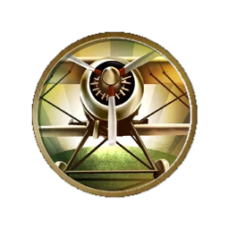

航空
游戏信息:
允许你建造三翼机，一种被设计用来获取制空权的空军单位，以及早期轰炸机，可以用来摧毁陆军单位和城市。
特殊能力:
摩艾石像群 金钱 产出增加: 1
宫堡 文化 产出增加: 1
宫堡 金钱 产出增加: 2
宫堡 文化 产出增加: 1
宫堡 金钱 产出增加: 2
引言:
“航空既不是一种工业也不是一门科学。它是一个奇迹。”
——伊戈尔·西科尔斯基（俄裔美籍飞机设计师）
历史信息:
自古以来，人类一直梦想征服天空。达芬奇的飞行器设想是广为人知的，当然还有许多其他人不太著名的设想。早期理论家观察自然界的空中主人——鸟类，然后设计出“扑翼机”来模仿其翅膀扇动的过程。但是早期设计因缺少先进的材料、发动机和流体力学知识而很难实现。
空气动力学在16到19世纪为达芬奇、伽利略、惠更斯、牛顿、伯努利、欧拉和斯米顿等天才科学家所推进。1804年，英国人乔治凯莱试飞了固定翼的滑翔机模型，到了1853年，他建造了全尺寸的滑翔机，并带着他不情愿的车夫做了第一次载人滑翔飞行。
1902年，怀特兄弟运用改进的机翼开始建造他们自己的滑翔机。在找不到有经验的制造商的情况下，他们自己设计制造了轻型汽油发动机。在1903年12月3日，怀特的飞机一共试飞了4次，最长达到852英尺。在怀特兄弟的突破之后的几年里，航空技术突飞猛进。到了1908年，美国的格伦柯蒂斯单次飞行超过了1公里；而1909年，法国人路易斯布莱里奥飞越了英吉利海峡。
一战使航空技术大幅提升，特别是在飞机武器化上面，战斗机和轰炸机就是出现这个时期。到了20年代，飞行员们开始在频繁地横跨大陆飞行，而在1927年，查尔斯·林白完成了第一次不间断横越大西洋的飞行。二战中，飞机的性能在速度、航程、续航力和杀伤力方面都得到了极大的提高，战争结束前，喷气式飞机、远程高空轰炸机和直升飞机都已投入现役。
在现代，航空已成为日常生活的一部分，从美国直飞中国仅仅在75年前还是一个不可实现的梦想，现在却仅仅是令乘客感觉有点沉闷而已。虽然911事件使得航空业遭受挫折，但每天仍有上百万人乘坐飞机旅行。航空业仍将继续发展。
空气动力学在16到19世纪为达芬奇、伽利略、惠更斯、牛顿、伯努利、欧拉和斯米顿等天才科学家所推进。1804年，英国人乔治凯莱试飞了固定翼的滑翔机模型，到了1853年，他建造了全尺寸的滑翔机，并带着他不情愿的车夫做了第一次载人滑翔飞行。
1902年，怀特兄弟运用改进的机翼开始建造他们自己的滑翔机。在找不到有经验的制造商的情况下，他们自己设计制造了轻型汽油发动机。在1903年12月3日，怀特的飞机一共试飞了4次，最长达到852英尺。在怀特兄弟的突破之后的几年里，航空技术突飞猛进。到了1908年，美国的格伦柯蒂斯单次飞行超过了1公里；而1909年，法国人路易斯布莱里奥飞越了英吉利海峡。
一战使航空技术大幅提升，特别是在飞机武器化上面，战斗机和轰炸机就是出现这个时期。到了20年代，飞行员们开始在频繁地横跨大陆飞行，而在1927年，查尔斯·林白完成了第一次不间断横越大西洋的飞行。二战中，飞机的性能在速度、航程、续航力和杀伤力方面都得到了极大的提高，战争结束前，喷气式飞机、远程高空轰炸机和直升飞机都已投入现役。
在现代，航空已成为日常生活的一部分，从美国直飞中国仅仅在75年前还是一个不可实现的梦想，现在却仅仅是令乘客感觉有点沉闷而已。虽然911事件使得航空业遭受挫折，但每天仍有上百万人乘坐飞机旅行。航空业仍将继续发展。